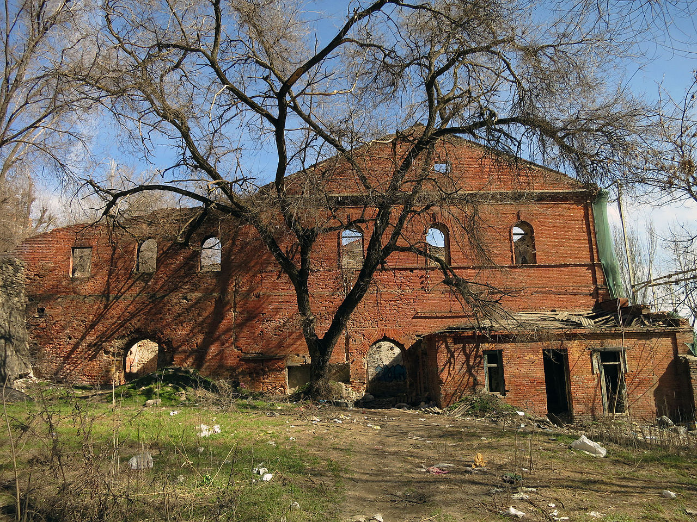

Одна из главных достопримечательностей Ростова-на-Дону представляет собой руины. Но даже в таком печальном состоянии Парамоновские склады производят сильное впечатление. Стены из добротного красного кирпича напоминают крепостные развалины, а бьющие повсюду родники создают причудливые водопады и пруды с кристально чистой водой. Сложно поверить, что столетие назад это место было преисполнено жизни и приносило городу огромные деньги, обеспечивая работой тысячи людей. К сожалению, судьба расположенных в самом центре Ростова-на-Дону корпусов зернохранилищ, известных как Парамоновские склады, остается неизвестной. Хотя планы по их обустройству все же существуют: по последней информации здесь планируется оборудовать спа-комплекс.
А пока мощные кирпичные стены, пережившие вторую мировую войну, медленно уничтожаются банальной человеческой бесхозяйственностью. История
История Парамоновских складов началась в 19 веке. В те времена основной объем товарооборота местного порта приходился на пшеницу, поставляемую в Англию. Количество отправляемой на Туманный Альбион продукции постоянно росло, поэтому неудивительно, что в районе Хлебной пристани было решено построить огромный складской комплекс.
Среди сотен ростовчан, работавших здесь на рубеже столетий, был и молодой Алексей Пешков, более известный как Максим Горький. Тяжелейшие условия труда на Парамоновских складах он описал в нескольких своих произведениях.
Старейшее здание было построено в 1850-х гг., а самое новое — в конце 1890-х гг. Через склады прошли тысячи тонн зерна, шерсти, угля, продуктов питания и других товаров, продажа которых помогла Ростову-на-Дону стать важнейшим экономическим центром Российской империи.
Руководившие строительством складов инженеры блестяще использовали главную особенность этого места — незамерзающие родники. Вся вода собиралась в трубы и пропускалась через складские помещения. Так как температура родников в течение года не менялась и держалась на отметке +9° C, в складах обеспечивалась постоянная прохлада, благоприятная для хранения зерна.
Сегодня Парамоновские склады стали пристанищем для различного рода асоциальных личностей, а в образованных источниками бассейнах любят искупаться детишки. Огромной популярностью «заброшка» пользуется среди фотографов, особенно свадебных. И это неудивительно: на Парамоновских своя атмосфера, соединяющая в себе красоту природы и мощь творений рук человеческих.